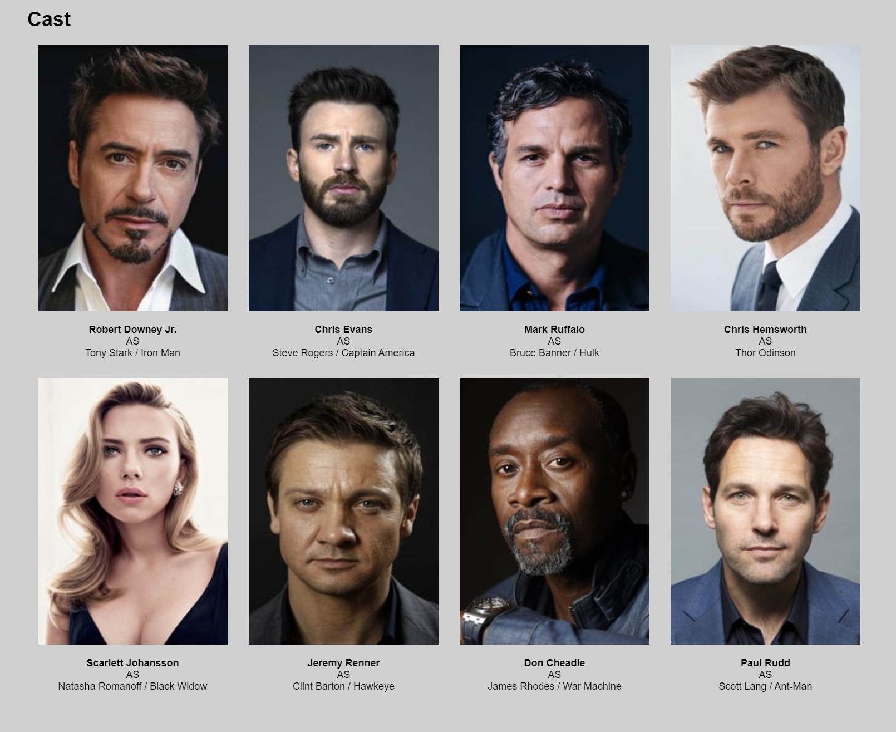

Movie Scraper
This website is designed for users to be able to search for movies through The Movie Database, finding details, cast, and reviews of a particular movie or TV show. The website design required use of a frontend and backend ecosystem to create a proper proxy server to pull JSON from the database. Python and flask were used to create that proxy server to split load pressure from directly calling TMDB APIs in the frontend, making it easier for the frontend to display the webpage under a heavier load. The frontend is not responsive, as the focus of the website is to emphasize good practice for backend.

